TS MM-TS-IC-05 — Insurance Programme Renewal and Captive Risk Retention
This process manages the renewal and captive risk retention for insurance programmes across ride-hail, last-mile delivery, micromobility, and autonomous ride-hail archetypes.
Well sourced Shared Marketplace Core
🗺 BPMN Process Flow
{kind=link}

Vector diagram — stays sharp at any zoom • Click to zoom • Scroll to zoom • Drag to pan • Download SVG
📋 Process Attributes
| Process ID | MM-TS-IC-05 |
|---|---|
| Tier | Shared Marketplace Core |
| L1 Domain | 🛡 Trust & Safety |
| L2 Process Group | Insurance & Claims |
| L3 Name | Insurance Programme Renewal and Captive Risk Retention |
| Trigger | Annual review of existing insurance policies or detection of significant safety incidents requiring policy adjustments. |
| Outcome | Successful renewal of insurance policies with updated coverage limits and terms to ensure continued risk retention for the company. |
| Archetype Variation | Ride-hail matches drivers, micromobility rebalances vehicles, delivery assigns couriers. Autonomous ride-hail requires additional considerations for AV-specific risks. |
| Systems | Uber Michelangelo Checkr (Checkr, Inc.) Stripe Connect (Stripe) Twilio (Twilio Inc.) OpenStreetMap (OSM Foundation) |
📋 L4 Process Steps
| Step | Name | Role | System | Input | Output | KPI | Pain Point / Risk | Decision? | Exception? |
|---|---|---|---|---|---|---|---|---|---|
| 1.1 | Initiate Insurance Review | Trust and Safety Manager | Uber Michelangelo | Safety incident reports, historical claims data | Insurance review report | Incident response time to first contact (minutes) | Accumulating large volumes of safety incidents can delay the review process. | N | Y |
| 1.2 | Assess Risk Exposure | Safety Incident Responder | Checkr (Checkr, Inc.) | Driver background check data | Risk exposure assessment report | Fraudulent account detection precision/recall (%) | Inaccurate background checks can lead to false positives or negatives. | Y | N |
| 2.1 | Evaluate Insurance Policies | Insurance Claims Handler | Stripe Connect (Stripe) | Current insurance policy details, premium costs | Policy evaluation report | Insurance loss ratio (%) | High premiums can impact profitability. | Y | N |
| 2.2 | Identify Coverage Gaps | Special Investigations Unit Lead | Braintree (PayPal) | Risk exposure assessment report, policy evaluation report | Coverage gaps analysis | Safety incident rate per 100k trips (rate) | Undetected coverage gaps can lead to significant financial losses. | Y | N |
| 3.1 | Negotiate New Policies | Trust and Safety Manager | Twilio (Twilio Inc.) | Coverage gaps analysis, budget constraints | Proposed insurance policy terms | Claim cycle time (days) | Negotiating with insurers can be time-consuming and complex. | Y | N |
| 3.2 | Review Proposed Policies | Safety Incident Responder | OpenStreetMap (OSM Foundation) | Proposed insurance policy terms, legal review | Policy review report | Match time under 15 seconds | Legal discrepancies can delay the approval process. | Y | N |
| 4.1 | Finalize Insurance Policies | Insurance Claims Handler | Google Maps Platform (Google) | Policy review report, final budget approval | Final insurance policy documents | Driver acceptance rate above 70 percent | Driver dissatisfaction with new policies can lead to high turnover. | Y | N |
| 4.2 | Implement New Policies | Special Investigations Unit Lead | DoorDash Autonomous Delivery Platform (DoorDash (internal)) | Final insurance policy documents, internal communication plan | Policy implementation plan | Incident response time to first contact (minutes) | Poor communication can lead to confusion and non-compliance. | N | Y |
| 5.1 | Monitor Policy Performance | Trust and Safety Manager | Joyride Fleet Management Dashboard (Joyride) | Policy implementation plan, real-time incident data | Performance monitoring report | Insurance loss ratio (%) | Real-time monitoring requires robust data integration. | Y | N |
| 5.2 | Adjust Policies as Needed | Safety Incident Responder | Bolt in-house e-bike platform (Bolt Technology OÜ) | Performance monitoring report, stakeholder feedback | Policy adjustment plan | Claim cycle time (days) | Continuous adjustments require ongoing coordination with stakeholders. | Y | N |
📊 KPIs & Risk Register
KPIs
Incident response time to first contact (minutes) Insurance loss ratio (%) Claim cycle time (days) Driver acceptance rate above 70 percent
Key Risks
Regulatory changes affecting insurance requirements and premiums. Safety incidents leading to increased claims and higher insurance costs. Operational inefficiencies in policy implementation and monitoring.
Swim Lanes
Trust and Safety Manager · 1.1, 3.1, 4.1, 5.2 Safety Incident Responder · 1.2, 2.2, 4.2, 5.1 Insurance Claims Handler · 2.1, 3.2, 5.2 Special Investigations Unit Lead · 3.2, 4.1